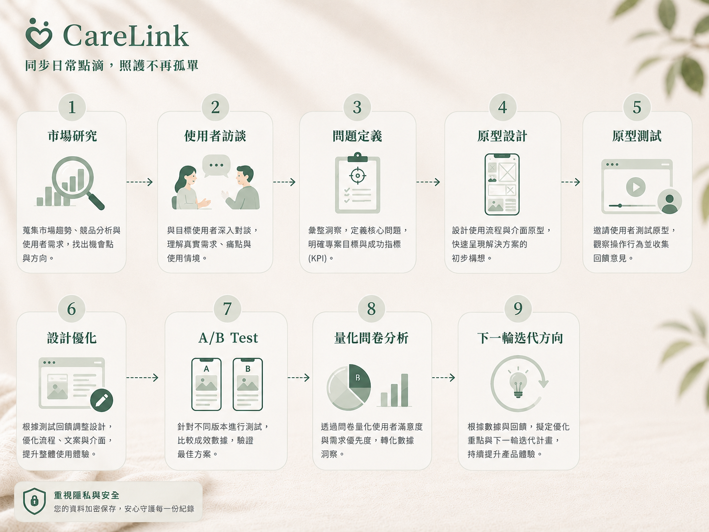
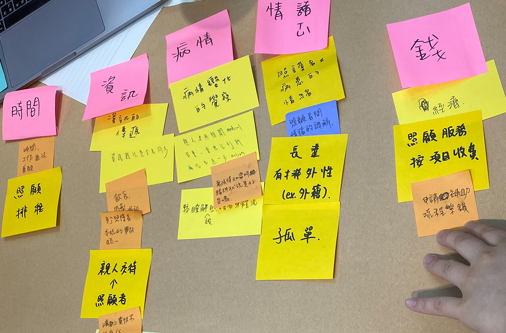
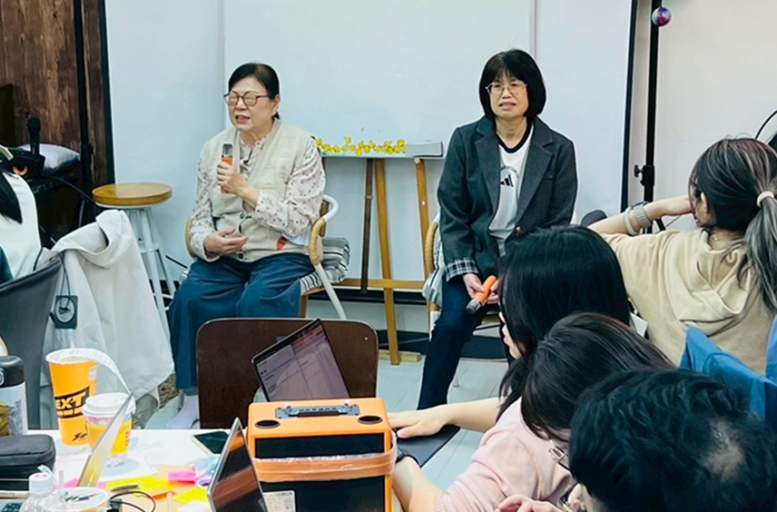
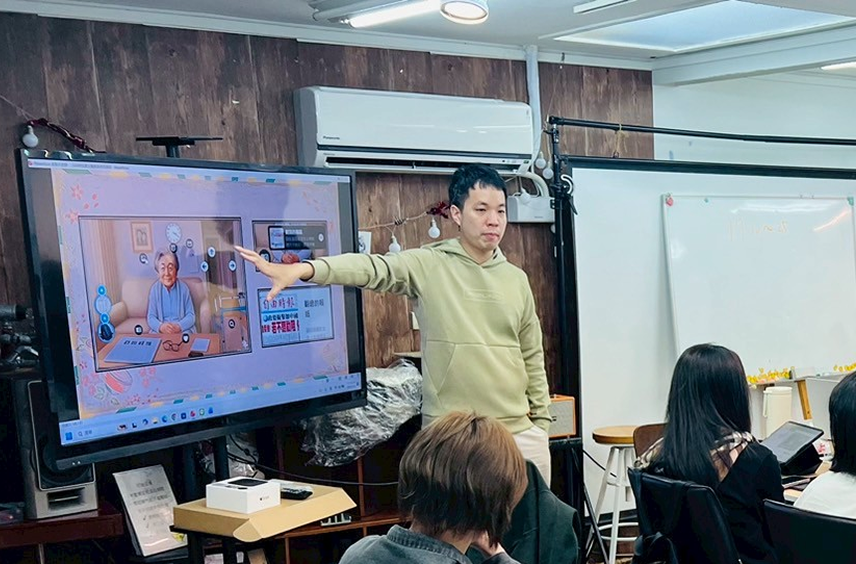
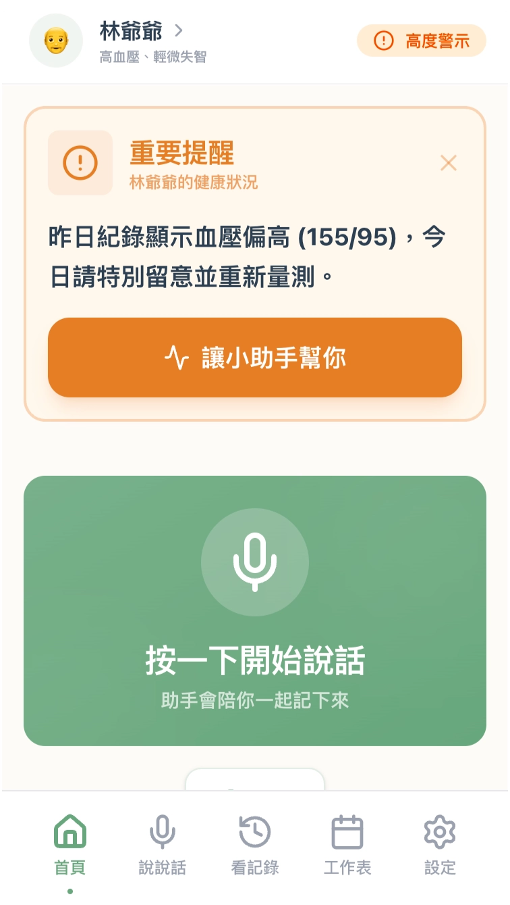
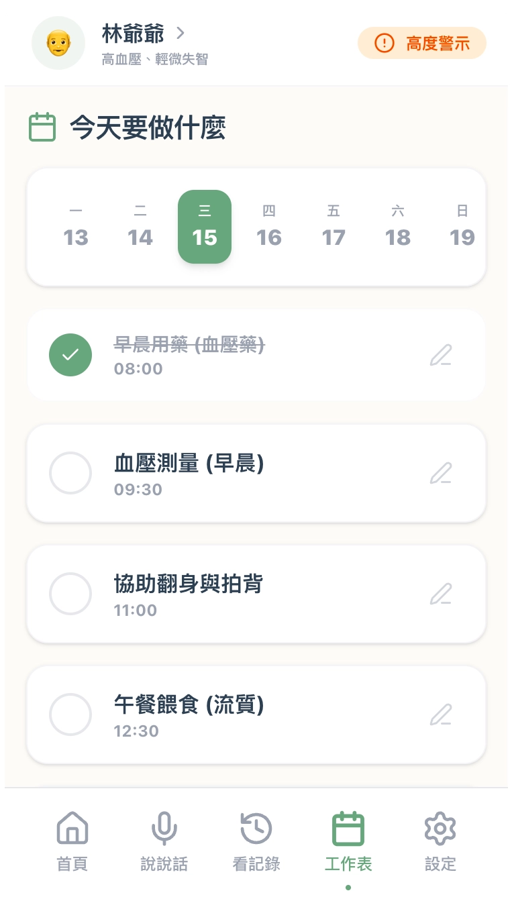
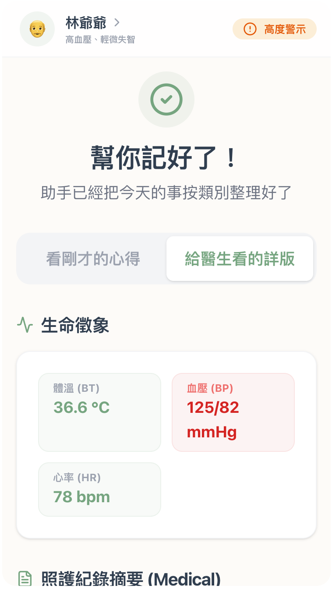

CareLink 家庭長照 AI 聯絡簿
降低家庭照護中因資訊分散、交接不清與判斷壓力所產生的焦慮與溝通成本。
AgeTech Side Project × 馬偕醫護管理學校合作
台灣家庭照護，本質上是資訊協作問題。紀錄散落在 LINE 群組、紙本日誌、口頭交代之間，主要照顧者成了唯一的資訊節點，次要照顧者永遠不知道昨天發生了什麼，就醫前半小時才在手機裡翻記錄。
CareLink 不是要做完整的醫療診斷系統。第一步只想解決一件事：讓照顧者之間的資訊傳遞，不再這麼費力。

專案摘要
團隊組成：3 PM · 1 Front-end Engineer · 1 Server Engineer · 1 UX/UI
我的角色：UX / PM｜產品策略、使用者研究、原型設計、A/B Test 分析
專案亮點
資訊共享與隱私控制是同一個需求
「家人主動同步」和「資料隱私機制」在原型測試並列最高分（9.75/10）。家屬要共享資訊，前提是能控制誰看得到。LINE 沒有結構化隱私分層，紙本不能自動同步，兩個功能缺一個，另一個就不成立。
AI 信任的關鍵是控制感，不是透明度
A/B 測試驗證三種設計：只標示來源 7.5 分，讓使用者能修改 8.75 分，保留修改紀錄 9.5 分。差距清楚，方向也清楚：不是告訴使用者「這是 AI 生成的」就能建立信任，而是讓他們能動它、看得到誰動過。
設計決策直接移動商業指標
原型測試付費意願 7.25，A/B 測試加入 AI 透明度機制與圖表呈現後跳到 9.0，整體滿意度從 7.75 到 9.0。功能設計的改變，直接反映在使用者願不願意掏錢這件事上。
專案指標
以下數據來自 A/B 測試問卷，前四高分功能，0–10 分換算為百分比。
- AI 自動摘要取代手動整理
- 家屬不需反覆向家人更新狀況
- 一鍵生成可交接的結構化紀錄
- 保留修改紀錄比標示 AI 來源高出 2 分
- 讓使用者能修改才能真正建立信任
- 設計方向：告知 → 賦權
- 原型測試 7.25 → A/B 測試後跳升至 9.0
- AI 透明度機制與圖表設計直接帶動轉換
- 出現首位願意支付 NT$500 以上月費的受訪者
- 適合推薦給其他有家庭照護需求的人
- 解決照顧者之間共同的資訊落差問題
- 具備長照社群自然擴散基礎

問題定義
訪談 9 位有長照家庭照顧經驗的受訪者，以及職能治療師林鈺祥醫師和兩位長照居服員，用 KJ 法整理訪談關鍵字，再以 MECE 歸納五個深層痛點，最終收斂為三個核心問題架構方向。
深層痛點分析
收斂為三個核心問題架構方向



目標使用者與核心價值
從矛盾到功能
研究中發現照顧者存在行為矛盾，我們將這些矛盾直接轉化為設計方向：
功能假設與驗證核心



導入「語音輸入」降低紀錄門檻
考慮到長輩與照顧者可能不擅長 3C，系統核心功能支援語音輸入快速紀錄吃喝拉撒睡，讓忙碌的照顧者可以用講的完成紀錄，不需停下手邊工作。
內建「AI 微弱訊號偵測與科別導航」
將長期的情緒、用藥、飲食紀錄交由 AI 分析。當偵測到長輩行為頻率異常（如情緒不穩、睡眠改變），系統主動發出「預警訊號」，並根據症狀精準建議應該掛哪一個科別或尋求何種長照資源。
照護摘要
統整飲食狀況、飲水量、排泄時間與複雜用藥（經常多達 10–20 種）的平台，確保任何接手的家屬或看護都能一眼掌握，取代傳統的紙本或 Excel。
醫囑 SOP 化
看診後用語音方式整理醫囑、用藥指引資訊，避免照護過程中出現轉述錯或遺漏的狀況。
原型驗證結果
高分功能摘要（原型測試，平均 ≥ 9.0）
需要補強的方向
A/B 測試
AI 信任機制：給控制感比貼標籤有效
三種設計放在同一份問卷裡對照，差距相當清楚：
圖表呈現：疲累的時候效果更明顯
高分功能摘要（A/B 版本，平均 ≥ 9.0）
兩輪測試對比
整體滿意度和付費意願是最大的兩個躍升。照護溝通實用性小幅下滑 0.5 分，值得留意，可能是 A/B 版本介面複雜度增加，反而稍微影響了直觀感受。降低照護壓力兩輪都墊底，幾乎沒有移動，是下一輪最重要的設計缺口。付費意願這輪也出現了第一位願意支付 NT$500 以上月費的受訪者。
設計洞察
- 分層資訊架構方向正確。訪談中受訪者直接說資訊呈現太混亂、不知道該看哪裡，這個反饋促成了分層資訊設計決策：先給日常摘要，有需要才展開醫護詳情。Q15 獲得 9.25 分，驗證方向正確。
- AI 信任不是透明度問題，是控制感問題。只貼「AI 生成」標籤，分數 7.5。讓使用者能修改、能看到修改紀錄，分數到 9.5。設計方向從「告知」轉向「賦權」。
- 情緒層 UX 還沒被碰到。照顧者的壓力來源不只是工具不好用，還有情緒上的孤立感和責任感。兩輪測試加起來，「降低照護壓力」兩輪都墊底，這一層的設計幾乎還沒有動到。
- 記錄動機依賴「資訊有去處」。受訪者直接說：若記錄後沒有人看，不知道為什麼要記錄。記錄功能的 UX 需要讓使用者清楚知道「這份記錄誰會看到、什麼時候會用到」，否則持續記錄的動機會消失。